LaViDa：用于多模态理解的大型扩散语言模型
LaViDa: A Large Diffusion Language Model for Multimodal Understanding
GitHub star 为 2026-10-20 的快照。阅读状态、进度与收藏只保存在你的浏览器里。
逐节精读
这部分按论文的章节顺序，用本站自己的话把整篇论文从头讲一遍。读懂某个概念需要的背景知识，会在第一次用到它之前单独讲清楚（青色框）。每个结论都尽量说出“因为什么、所以什么”。论文以 CC BY 4.0 许可发布，所以原文图放在讲到它的地方，并说明这张图怎么看；原图没画到的概念，用本站的示意图补上。标“推算”的数字是本站根据论文数据算出来的，标“读图估计”的是从原图上读出的近似值，标“本站推论”的是我们的判断，都不是论文原话。本页读的是 arXiv v4（2026-07-15），并对照了官方代码仓库。
0 导读：这篇论文解决什么问题
到 2025 年上半年，几乎所有能看图回答问题的大模型（视觉语言模型，VLM），比如 LLaVA、Qwen-VL、InternVL，都建在自回归语言模型上：回答是一个 token 一个 token、从左往右写出来的。这带来两个后果。第一，写 \(N\) 个 token 至少要把模型完整算 \(N\) 遍，速度几乎没有调节的余地。第二，有些任务要求“后面的内容先定下来，再补中间”，比如“写一首四行诗，每行分别以 A、Be、Ca、De 开头”，或者“按给定的 JSON 字段填写图里物体的属性”；从左往右写的模型只能靠提示词去尽量遵守，并不能保证做到。
2025 年初，LLaDA 和 Dream 两个 7–8B 规模的掩码扩散语言模型在纯文本任务上做到了和同规模自回归模型相近的水平。它们的生成方式完全不同：先把整段回答都写成“空格”（掩码 token），再一轮轮地把空格填上；每一轮可以填任意位置、也可以一次填好几个。LaViDa 照着 LLaVA 的配方，给 LLaDA-8B（或 Dream-7B）接上一个 SigLIP 视觉编码器和一个小的投影网络，用两阶段训练（55.8 万图文对做对齐，约 100 万条指令数据做微调）把它变成一族看图理解的扩散模型。
直接照搬会遇到三个问题，论文各给了一个办法。第一，扩散训练每次只在被遮住的那部分回答上算损失，平均只有一半 token 有监督，关键的答案词还可能恰好没被遮住；作者用互补掩码让每个回答 token 都被用上。第二，扩散模型用双向注意力，不能像自回归模型那样缓存前文的中间结果，而一张图就有约 1000 个视觉 token，每一步都要把它们重算一遍；作者提出 Prefix-DLM，在推理时改一下注意力掩码，让图像和问题部分只算一次。第三，减少去噪步数可以加速，但常用的“每步揭开同样多个 token”的做法在步数少时质量掉得很快；作者借用图像扩散里的时间步偏移，让前几步多揭开一些。
论文报告的主要结果是：在 MMMU 上 LaViDa 得 43.3，高于训练数据规模相同的自回归模型 Open-LLaVA-Next-8B 的 37.4；但在需要读图中文字的任务上明显落后（DocVQA 59.0 对 69.9）。在 COCO 图像描述上，前缀缓存把每张图的生成时间从 7.65 秒降到 1.93 秒，代价是 CIDEr 从 121.0 降到 117.3；把步数减半后是 1.23 秒、114.8，比自回归基线的 1.71 秒、111.8 又快又好。在“每行以指定音节开头”的看图写诗任务上，LaViDa 的约束满足率是 100%，两个自回归模型都不到 50%。
这些数字要放在条件下读：对照的自回归模型和 LaViDa 用了同样多的图文数据，但语言骨干、视觉编码器、每张图的视觉 token 数和训练轮数都不一样；速度是在单张 A5000、一次只处理一个请求时测的；写诗的约束是“直接把字写在画布上”保证的，而自回归模型只靠提示词。第 4.7 节会把这些逐条摊开。
读完这部分，你应该能回答这几个问题：
- LLaVA 式的视觉语言模型由哪几部分组成、怎么分阶段训练？把语言模型换成掩码扩散模型，哪些地方要跟着改？
- 掩码扩散的训练为什么“浪费”监督信号？互补掩码怎么补上，又多花了多少计算？
- 双向注意力为什么不能用 KV 缓存？Prefix-DLM 改了什么，为什么能缓存，又为什么会掉一点分？
- “每步揭开多少个 token”怎么安排？为什么在文本上凸调度比线性调度好，和图像生成的经验正好相反？
- 扩散模型做受约束的填空为什么天然占优？这个优势在实验里被测得有多公平？
- 和自回归 VLM 比，哪些条件对齐了，哪些没有？
1 引言：为什么想用扩散模型做视觉语言模型
视觉语言模型的用途很广：从手机上的助手，到给科学图表写说明、理解文档，再到工业里的商品打标签、内容审核和质检。作者指出，当时流行的 VLM 全都建在自回归大语言模型之上，于是继承了自回归生成的两个局限。
第一个局限是速度。自回归模型每次前向只产出一个 token，下一个 token 必须等上一个确定之后才能算，所以生成过程天然是串行的，很难并行加速。第二个局限更关键：它很难处理需要双向上下文或结构约束的任务。作者举了两个例子：写一首每行以指定音节开头的诗；按照预先规定好的 JSON 格式，从图片中提取结构化信息。这类任务需要在序列的不同位置之间“协调”内容，比如先知道第三行要以 Ca 开头，再决定第二行怎么收尾。作者认为，自回归模型即使用精心设计的提示和示例，也很难稳定满足这类约束。
离散扩散模型提供了另一种生成方式。它的“前向过程”把一段文本逐渐变成全是掩码 token 的序列；推理时反过来，从一串掩码出发，由模型一步步把它们还原成有意义的文字。这种方式在原理上有两个好处：一是可以通过调整去噪步数，在速度和质量之间自由取舍（步数少就快、步数多就好），而自回归模型的吞吐是固定的“一步一个 token”；二是每个位置都能同时看到左右两边的内容，适合做文本填空，从而方便实现受约束的生成和固定格式的输出。
LaViDa 的全称是 Large Vision-Language Diffusion Model with Masking。它的做法和 LLaVA 给自回归语言模型“装上眼睛”的方式一样：用一个视觉编码器把图像变成向量，再送进扩散语言模型；训练也分预训练和监督微调两个阶段，只是把训练目标换成扩散目标。
作者在改造过程中遇到了三个具体困难，后面方法部分的三个技术分别对应它们：
- 训练的数据效率低。扩散训练每次只在被遮住的 token 上计算损失。比如目标答案是“The answer is dog”，加噪后可能变成“The [M] is dog”，关键词 dog 恰好没被遮住，于是它不参与这一次的损失计算。而在多模态任务里，答案词往往正是需要从图像中读出来的那部分信息。作者的对策是互补掩码（§3.2）。
- 推理慢。双向注意力让扩散模型无法使用 KV 缓存，每一步都要把整个提示重新算一遍。纯文本时提示不长，问题不大；但多模态提示里有几百上千个视觉 token，这就成了主要瓶颈。作者的对策是 Prefix-DLM（§3.3）。
- 步数少时质量差。常用的线性调度每一步揭开同样多的 token，步数一减少，质量下降得很明显。作者借鉴文生图模型 SD3，采用时间步偏移来调整每一步揭开的数量（§3.3）。
论文列出的贡献有三条：提出 LaViDa 这一族基于扩散的 VLM；提出互补掩码、Prefix-DLM 和时间步偏移三个训练与推理技术；系统地研究了把扩散模型用于视觉语言任务时的各种设计选择，例如图像分辨率。
2 背景：视觉语言模型的通用配方，与掩码扩散语言模型
2.1 视觉语言模型的通用配方
大语言模型只认识 token：每个 token 先被查表变成一个向量（词向量），再送进 Transformer。要让它“看见”图片，最简单的办法是把图片也变成一串和词向量同样长短的向量，排在问题前面一起送进去。LLaVA 用三个部件做这件事：
- 视觉编码器。一个已经训练好的视觉 Transformer（ViT），比如 CLIP 或 SigLIP。它把输入图片切成许多小方块（patch），每个方块输出一个向量。CLIP 和 SigLIP 都是用海量“图片—文字说明”配对训练的，所以它们输出的向量已经带有语义。
- 投影层。视觉编码器输出向量的维度和语言模型词向量的维度不同，含义空间也不同。一个小的多层感知机（MLP）把每个视觉向量映射到语言模型的词向量空间。映射之后的向量就叫“视觉 token”。
- 语言模型。它把“视觉 token + 问题 token”当作前文，生成回答。
训练通常分两个阶段。预训练（对齐）阶段只训练投影层，用图片和简短描述的配对数据，让视觉 token 落到语言模型能理解的位置上。微调阶段把各部分一起训练，用各种“看图回答指令”的数据，让模型学会按要求回答问题。后来的 LLaVA-NeXT 为了看清高分辨率图片里的细节，又加了一步：视觉编码器的输入尺寸是固定的（比如 384×384），于是把大图切成几块，每块单独编码，再加上一张整体缩小的图，几份视觉 token 拼在一起。
论文 §2.1 的概括与此一致：先有一个强的语言模型，再接上视觉编码器，分预训练和微调两个阶段训练；预训练数据是图文对，微调数据是各种指令跟随任务。截至论文发表时，LLaVA、Qwen-VL 等主流系列都使用自回归的训练目标。
2.2 掩码扩散语言模型：怎么训练，怎么生成
把一段长度为 \(L\) 的文本记作 \(X_0=[X_0^1,\dots,X_0^L]\)。前向过程用一个“时间” \(t\in[0,1]\) 控制遮住多少：在时间 \(t\)，每个 token 独立地以概率 \(t\) 被换成掩码 token [M]，以概率 \(1-t\) 保持原样。所以 \(t=0\) 是干净文本，\(t=1\) 是全部被遮住，\(t=0.3\) 时平均有 30% 的位置是 [M]。写成公式就是：
这里 \(\mathrm{Cat}\) 表示类别分布，\(X_0^i\) 和 \(\mathbf M\) 分别是原 token 和掩码 token 的独热向量。反向过程由神经网络 \(p_\theta\) 来做：给它一段部分被遮住的 \(X_t\)，让它对每个 [M] 位置猜出原来的 token。训练目标是：
为什么只在被遮住的位置上算损失？因为没被遮住的位置答案就摆在输入里：在反向过程中，一个 token 一旦从 [M] 变成了具体的词，之后就不会再变，它的“预测”有确定的闭式解，与网络参数 \(\theta\) 无关，放进损失也不会产生梯度。前面的 \(1/t\) 是一个权重：\(t\) 小时被遮住的 token 少，每个 token 的权重就大一些，这样整个式子才正好是负对数似然的一个上界（也就是证据下界 ELBO 取负号）。推导细节见 MDLM 精读页。
生成时，先放一块长度为 \(L\) 的“画布”，全部填 [M]，然后分 \(K\) 步把时间从 1 走到 0。每一步，模型对所有 [M] 位置同时给出预测；系统只保留其中一部分（LLaDA 默认保留模型最有把握的那些，叫低置信度重掩码），其余位置重新盖回 [M]，留到后面的步骤。每步保留多少个，由“调度”决定：最简单的线性调度每步揭开 \(L/K\) 个。\(K=L\) 时每步只定 1 个 token，最慢也最稳；\(K\) 越小，每步要同时定的 token 越多，越快，但互相之间来不及“商量”，越容易出错。
因为画布长度 \(L\) 是事先定死的，而回答不一定正好这么长，LLaDA 在训练时把回答用填充 token 补齐，并且在填充 token 上也计算损失，模型就学会了用 [PAD] 把多余的位置填满（论文附录 A.3 沿用了这个做法）。
论文 §2.2 和附录 A.1 用的就是上面这套记号：前向过程把 \(X_0\) 在时间区间 [0, 1] 上逐渐变成全是 [M] 的 \(X_1\)，网络 \(p_\theta\) 建模反向过程，训练时 \(t\) 从 [0, 1] 均匀采样，损失只在被遮住的 token 上计算。附录 A.1 还写出了 MDLM 推导的反向后验：从时间 \(t\) 走到更早的 \(s\) 时，已经揭开的 token 保持不变，仍是 [M] 的位置以 \((t-s)/t\) 的概率变成网络预测的 token、以 \(s/t\) 的概率继续保持 [M]。
LaViDa 试了两个现成的扩散语言模型当骨干。LLaDA-8B 是从零开始用掩码扩散目标训练的，预训练用了 2.3T token；Dream-7B 则从自回归模型 Qwen2.5-7B 初始化，再用掩码扩散目标继续训练了 580B token（两者的细节分别见 LLaDA 和 Dream 精读页）。论文附录 D 还给出一个后面会反复用到的限制：LLaDA 的上下文长度是 4096，Dream 只有 2048。
3 方法：模型结构、训练与两项推理技术
3.1 模型结构：一张图变成 980 个视觉 token
LaViDa 的结构和常见的自回归 VLM（如 LLaVA）几乎一样：一个视觉编码器、一个扩散语言模型，中间用一个 MLP 投影网络连起来。和 LLaVA 唯一的大区别在语言模型那一侧：它的注意力是双向的（不加因果掩码），训练目标是上一节的扩散目标，而不是“预测下一个 token”。
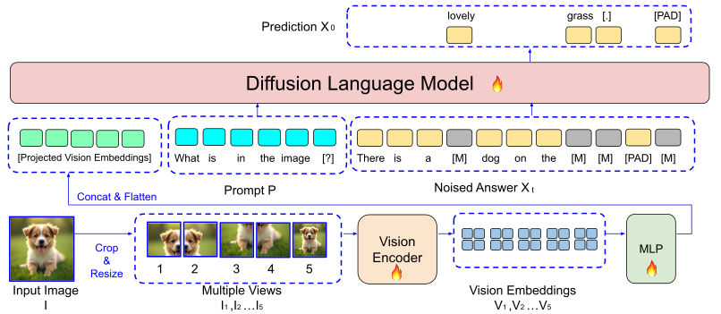
视觉编码。给定图片 \(I\) 和问题 \(P\)，先把图片缩放到 768×768，切成 4 块不重叠的 384×384；再把原图整体缩放到 384×384，作为第 5 个视图。这是沿用 LLaVA-OneVision 等前人的做法。5 个视图分别送进视觉编码器 SigLIP-400M，每个视图输出 \(27\times27=729\) 个向量（384 ÷ 14 的 patch 大小，取整为 27），5 个视图一共 3645 个。
3645 个 token 太长了，所以作者对每个视图做 2×2 的平均池化：相邻 2×2 个向量取平均，合成一个。每个视图从 27×27 变成 14×14 = 196 个，5 个视图合计 980 个。这些向量按顺序拉平、拼接成一维序列，经过投影网络，就成了扩散语言模型看到的视觉前缀。
扩散语言模型。它是一个多层 Transformer，结构和普通大语言模型一样，只是注意力不加因果掩码，训练用扩散目标。它的输入是三段拼起来的序列：投影后的视觉向量、问题 \(P\)、部分被遮住的回答 \(X_t\)。最后一层的输出经过一个线性层，得到回答每个位置上的预测分布 \(p_\theta(X_0^i\mid I,P,X_t)\)。论文默认用 LLaDA-8B 做骨干（记作 LaViDa-L），也试了 Dream-7B（记作 LaViDa-D）。
- 训练脚本
llada-hd-llada-s2.sh与llada-hd-dream-s2.sh的起点分别是 LLaDA-8B-Instruct 和 Dream-v0-Instruct-7B，也就是两者已经做过指令微调的版本，论文正文只写了 LLaDA-8B / Dream-7B。视觉编码器是google/siglip-so400m-patch14-384，投影层是mlp2x_gelu（两层、GELU 激活）。 - 官方代码沿用 LLaVA-NeXT 的
anyres切图：从 384×768、768×384、768×768、1152×384、384×1152 五种网格里挑一个最贴合原图长宽比的，再加一张整体缩小图，并且去掉填充区域、加入换行 token（spatial_unpad）。所以视图数在 3 到 5 之间变化，“980 个视觉 token”是论文描述的 768×768 正方形情形下的数字。
3.2 训练：只给回答加噪，再用互补掩码把每个 token 都用上
每个训练样本由图片 \(I\)、问题 \(P\) 和干净的回答 \(X_0\) 组成。如果是多轮对话，就随机抽其中一轮当“回答”，把之前的对话历史当作“问题”。训练时先采样一个时间 \(t\in[0,1]\)，按前向过程把回答遮住一部分得到 \(X_t\)；图片和问题保持干净，不加噪。模型要做的是在看得见图片、问题和残缺回答的条件下，恢复被遮住的回答 token：
和纯文本时一样，损失只在 \(X_t^i=[\mathrm M]\) 的位置上计算。
问题出在哪里。LLaDA、Dream 在估计这个期望时，对每个样本独立地随机遮一次。作者指出，这对视觉语言任务不够高效，原因有两个：
- 平均只有约一半的 token 参与损失。\(t\) 在 [0, 1] 上均匀采样，每个回答 token 被遮住的概率就是 \(t\)，平均是 0.5。也就是说，一个样本里平均只有一半的回答 token 产生梯度，另一半白白当了输入。
- 关键的答案词可能恰好没被遮住。视觉问答的回答往往很短，真正承载图像信息的可能只有一两个词。在“The answer is dog.”里，如果 dog 没被遮住，这一次训练就完全没有要求模型“从图里认出狗”，传回视觉编码器的梯度也就和图像内容关系不大。作者称之为“视觉编码器的梯度没对准”。
互补掩码的做法。对每个样本，同时生成两份被遮住的回答 \(X_t\) 和 \(X_t^{C}\)，要求它们被遮住的位置互不重叠、合起来正好覆盖整个回答。论文的例子是：一份遮成“The [M] [M] dog .”，另一份遮成“[M] answer is [M] [M]”。这样，每个回答 token 一定会在其中某一份里被遮住、被要求预测，所有 token 都进入了损失。计算这两份的损失时，视觉编码只做一次，把得到的视觉向量复制给两份使用，进一步节省计算。
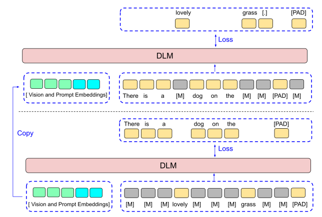
多花了多少。两份副本意味着语言模型每一步要处理的序列数翻倍，但视觉编码器只算一次。论文消融实验（表 4a）测得：在批大小 128 下训练 1000 步，不用互补掩码要 8.2 小时，用了是 8.9 小时，慢约 8%；换来的是 4 个基准全部提升，其中 ScienceQA 从 48.74 涨到 81.49（相对提升 67%）。第 4.6 节会再看这组数字。
- 公式里带 \(1/t\) 的权重，但官方
llava_llada.py的做法是：把两份副本的标签拼在一起，交给F.cross_entropy对所有被遮住的 token 直接取平均，没有 \(1/t\) 加权。遮挡概率取 \(p=(1-10^{-3})\,t+10^{-3}\)，避免 \(t\) 太接近 0 时遮挡概率变成零。 - 第二份副本遮住的是第一份没遮的位置，所以它的遮挡比例约为 \(1-t\)。也就是说，每对副本总是一份“遮得少、容易猜”，一份“遮得多、难猜”，两者的平均遮挡比例恒为 0.5。这和统计里用一对“对偶样本”降低估计方差的思路相似（本站推论）。
3.3 推理之一：Prefix-DLM，让图像和问题的 K/V 只算一次
推理时，先放一块长度为 \(L\) 的画布，全是 [M]（记作 \(X_1\)），然后在 \(K\) 个离散时间点 \(t_1=1,\dots,t_K=0\) 上逐步揭开。在每个时间点 \(t_i\)，模型给出一个完整的预测 \(p_\theta(X_0\mid X_{t_i})\)，然后把其中 \(L\times t_{i+1}\) 个位置重新盖回 [M]，得到 \(X_{t_{i+1}}\)。\(L\) 和 \(K\) 都是推理时的超参数。论文用 \(K/L\) 定义“NFE 比例”（NFE 是网络前向次数）：NFE = 100% 表示每次前向生成 1 个 token，NFE = 50% 表示平均每次前向生成 2 个。
整个流程和 LLaDA 一样，只有两处例外，就是这里和下一小节的两项技术。
Transformer 的每一层里，每个 token 都会算出一个 key 向量和一个 value 向量，别的 token 通过注意力去“读”它们（详细解释见 vLLM 精读页 §2.2）。自回归模型用的是因果注意力：每个 token 只能看见它前面的 token。于是一个 token 的 key 和 value 只取决于它自己和它前面的内容，后面再写多少字都不会改变它。这样就可以把前文的 key、value 存起来（KV 缓存），之后每一步只算新 token，直接读旧的。
扩散语言模型用的是双向注意力：每个位置都能看见所有位置，包括画布上的回答部分。而回答部分每一步都在变：有的 [M] 被揭开成了词。从第二层开始，每个 token 的表示都混入了“当时回答长什么样”的信息，所以就连图像和问题部分的 key、value 也会随着回答变化而变化，上一步算的结果不能原样拿来用，只能每一步把整条序列从头算一遍。
多模态让这件事格外昂贵。拿 COCO 图像描述来说，前缀有 980 个视觉 token 加上问题和对话模板，大约 1000 个；回答画布只有 32 个。没有缓存时，每一步约 97% 的计算花在重算一个根本没变的前缀上（推算）。
Prefix-DLM 的做法受到自回归模型里“前缀语言模型”（prefix-LM）的启发：换一种注意力掩码，让视觉 token 和问题 token 只能看见视觉 token 和问题 token，而回答 token 可以看见所有 token。这样一来，前缀部分的计算完全不依赖回答，它的 key、value 在整个生成过程中都不会变，只需在开始时算一次（这一步叫预填充），之后每一步都直接复用。回答部分仍然是双向的，并且能看见整个前缀。作者报告，这在 COCO 图像描述上带来最多 3.9 倍的加速。
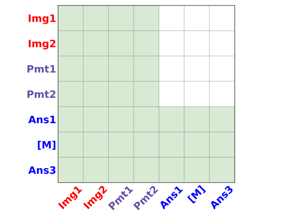
附录 B.4 把它和另外三种注意力掩码放在一起比较（原文图 8、表 8）：
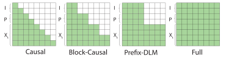
| 做法 | 注意力掩码 | 回答内的双向上下文 | 能用 KV 缓存 | 训练有额外开销 |
|---|---|---|---|---|
| 自回归模型 | 因果 | 无 | 能 | 无 |
| 标准扩散模型 | 全注意力 | 整条序列 | 不能 | 无 |
| Block Diffusion | 块因果 | 只在块内 | 能 | 有 |
| LaViDa（Prefix-DLM） | 前缀掩码 | 整条回答 | 能（前缀部分） | 无 |
表格内容取自原文表 8。作者特别比较了 Block Diffusion：它用块因果掩码，生成第 \(i\) 块时只能看见之前的块和本块，看不见后面的块，所以双向上下文最多只有一个块长，这对填空类任务不利；而且生成第 \(i\) 块时之前的块必须是干净的，朴素的训练方法每个样本最多只能遮最后一块，效率很低，要靠专门写的注意力内核才能并行训练，训练开销明显。Prefix-DLM 则既能缓存，又保留了回答内的完整双向上下文，并且只是一个推理技巧，不需要特殊的训练算法。
代价：训练和推理不一致。LaViDa 训练时用的是全注意力，前缀 token 是能看见（被部分遮住的）回答的；推理时用 Prefix-DLM，把这条信息流切断了。模型在推理时计算的已经不完全是训练时学的那个函数，所以质量会掉一点：COCO 描述在 NFE = 100% 时，全注意力（无缓存）的 CIDEr 是 121.0，Prefix-DLM 是 117.3（表 3a）。
那为什么不在训练时也用前缀掩码？作者试过，称为 Prefix-DLM-FT。难点在于互补掩码：一个样本有两份回答副本。一种做法（FT1）是对两份副本分别加前缀掩码；另一种（FT2）是把 \(I,P,X_t,X_t^{C}\) 拼成一条长序列，用掩码让 \(X_t\) 只看前缀和自己、\(X_t^{C}\) 也只看前缀和自己。每种又分别用“构造完整的 \(L\times L\) 掩码交给 PyTorch SDPA”和“用 FlexAttention 根据三段长度隐式生成掩码”两种实现，一共四个版本，算出来的损失完全相同，区别只在速度。
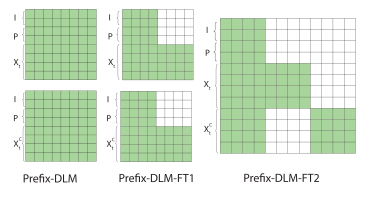
结果是：在 8 张 A6000、批大小 128 下，默认训练每步 37.2 秒，四个 FT 版本分别是 67.3、82.6、60.2、74.4 秒，最快的也慢了 62%（原文表 9；60.2 ÷ 37.2 ≈ 1.62，推算）。训练 1500 步（约 20 万个样本）后比较精度（原文表 10），两者互有胜负，7 个基准里不做 FT 的反而在 5 个上略高（例如 MMMU 40.56 对 40.10，VQAv2 63.26 对 61.02），FT 只在 MME（290.71 对 286.79）和 MathVista（35.00 对 33.60）上更好。所以作者认为 62% 的额外开销不值得，训练始终用全注意力，Prefix-DLM 只在推理时使用。这也顺带给用户多了一个旋钮：不在乎速度时可以关掉缓存，用全注意力换回一点质量。
这组推算说明了两件事。第一，缓存让每一步便宜了约 5 倍（0.22 ÷ 0.044，推算），整体只快了 3.96 倍（7.65 ÷ 1.93），是因为固定部分省不掉。第二，有了缓存之后每一步约 44 毫秒，已经接近这张卡“把 8B 参数从显存读一遍”的下限：bf16 下参数约 16 GB，A5000 的显存带宽为 768 GB/s（NVIDIA 官方规格），读一遍约需 21 毫秒（推算）。这时每一步算 32 个位置和算 1 个位置的耗时相差不大，所以每步多定几个 token（减少步数）几乎能按比例省时间，这正是扩散模型在批大小为 1 时能和自回归模型比速度的原因（本站推论）。
3.4 推理之二：时间步偏移，前几步多揭开一些
扩散语言模型可以通过离散化步数 \(K\) 在速度和质量之间取舍。LLaDA 和 Dream 用的是线性调度：在 \(t\in[0,1]\) 上均匀地每步揭开 \(L/K\) 个 token。作者发现，这种做法在步数少时性能下降明显，于是借鉴文生图模型 SD3，采用“偏移”调度。
把生成过程想成填一张有 \(L\) 个空格的表。总共填 \(K\) 轮，调度就是规定每一轮填几个空。线性调度是平均分配：\(L=32,\ K=8\) 时每轮填 4 个。也可以不平均：前几轮多填、后几轮少填，或者反过来。
形式上，取等间隔的时间点 \(t_i=i/K\)，再用一个单调函数 \(f\) 把它们变成 \(t'_i=f(t_i)\)，要求 \(f(0)=0,\ f(1)=1\)。时间 \(t'\) 时仍被遮住的 token 数是 \(\lfloor t'L\rfloor\)。线性调度就是 \(f(t)=t\)。如果 \(f\) 是凸函数（曲线在对角线下方，越靠近 1 越陡），从 \(t=1\) 出发往回走时，\(t'\) 掉得很快，意味着前几步揭开得多；如果 \(f\) 是凹函数（曲线在对角线上方），则前几步揭开得少，后几步揭开得多。
图像扩散里的经验多半偏向凹的一侧：SD3 在高分辨率时把时间往“噪声更大”的方向偏移，掩码图像生成模型 MaskGIT 用的余弦调度也是前几步只揭开很少几个。直观的理由是：一开始什么都不知道，先定少数几个最有把握的，后面信息多了再大批地填。
LaViDa 采用 SD3 的偏移函数：
\(s_\alpha\) 是单调的，两端固定在 0 和 1。\(\alpha<1\) 时它是凸的，前几步多揭开；\(\alpha>1\) 时是凹的。作者取 \(\alpha=1/3\)，并发现它比其他选择都好。代入一个数感受一下：\(t=0.5\)（走完一半的步数）时，\(s_{1/3}(0.5)=0.25\)，也就是说一半步数用完时，只剩 25% 的位置还是 [M]，75% 已经揭开了；而凹的 \(s_{3}(0.5)=0.75\)，一半步数用完时才揭开 25%。作者特别指出，这个结论和连续扩散模型 SD3 以及以前的掩码图像生成模型正好相反，后两者都认为凹调度（\(\alpha>1\)）更好。
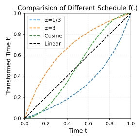
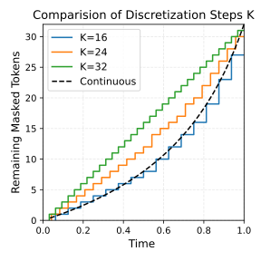
离散化时的取整问题（附录 A.2）。给定 \(L\) 和 \(K\)，如果相邻两个时间点的 \(\lfloor f(t)L\rfloor\) 取整后相同，那一步就一个 token 都不揭开，白白浪费一次前向，实际前向次数会少于 \(K\)，不同调度之间就没法公平比较。为此作者规定每一步至少揭开 1 个 token：在“剩余 [M] 个数严格递减”的约束下，找一组整数，让它们与 \(f(t_k)L\) 的平方误差之和最小。这条约束有一个直接后果：当 \(K=L\)（NFE = 100%）时，每步只能恰好揭开 1 个，所有调度都变成同一个，所以后面表 3b 和表 7 里 100% 那一列各种调度的分数完全相同。
论文没有解释为什么在文本上凸调度更好。一个可能的原因是回答画布里有大量填充 token：COCO 描述的画布长 32，而一句描述通常远不到 32 个 token，剩下的位置都要填 [PAD]，这些位置模型极有把握。凸调度前几步一次揭开很多个，按置信度挑出来的多半正是这些填充位置和句子骨架，于是有限的步数被留给了真正难定的内容词；凹调度则相反，把真正的内容挤到最后一两步里一次定下 6 到 10 个，相邻的内容词来不及互相协调，就容易出错（本站推论）。第 4.5 节的表 3b 显示，在 25% NFE 下 \(\alpha=3\) 的 CIDEr 只有 48.7，而 \(\alpha=1/3\) 是 101.1。
下面的小演示可以直观地看到“每步同时定的 token 越多，越容易出现互相矛盾的组合”：减少步数 N，观察不一致的概率和所需前向次数的变化。
- 代码里调度名叫
shift，参数名也叫shift，默认值是 3（凹）。复现论文的 COCO 结果要像eval/run_coco.sh那样显式传schedule__shift=0.33；仓库根目录的演示脚本predict.py用了schedule='shift'却没有传这个参数，实际用的是 α = 3。 - 代码的取整方式与附录 A.2 的最小二乘不完全相同：它先对相邻时间点的取整结果求差，把小于 1 的差补成 1，再把多出来的个数从若干步里逐个扣掉。两种方法得到的分配通常相近，但不保证一致。
4 实验：和自回归 VLM 比，比出了什么
4.1 训练与评测是怎么设置的
三个阶段。第一阶段（预训练）只更新投影层，让视觉向量对齐到扩散语言模型的表示空间，数据是 LCS-558K 的 55.8 万对“图片—描述”。第二阶段（微调）把所有部件端到端一起训练，学习按指令回答，数据约 100 万条。在第二阶段的模型基础上，作者又各自多训练了一段，得到两个专门版本：做数学推理的 LaViDa-Reason 和做文本填空的 LaViDa-FIM（第 4.3、4.4 节）。
微调数据。第二阶段的数据主要来自 Open-LLaVA-Next 公开的数据集。作者调整了各来源的权重，提高了部分问答数据的比重，原因是：对于多轮对话数据，LaViDa 每个训练步只随机抽其中一轮当回答（§3.2），多轮数据里的问答实际上被“稀释”了，需要补回来。原文表 5 列出了 18 个来源，最大的是 COCO（349,860 条）、ALLaVA-VFLAN（202,966）、Visual Genome（86,417）、OCR-VQA（80,000）、GeoQA+（72,318）和 GQA（72,140），合计 980,345 条（推算）。
超参与硬件。附录 B.1 写的是：AdamW 优化器，学习率 5e-3，余弦衰减；第一阶段全局批大小 256、训练 1 轮；第二阶段全局批大小 512、训练 2 轮。训练混用 A100 和 A6000，评测和测速都在 A5000 上。由于显存限制，A100 上每卡批大小 8、A6000 上每卡 4，用梯度累积凑出全局批大小。
评测。所有基准都用 lmms-eval 评测工具包和它默认的提示词。回答画布长度 \(L\) 取自回归模型评测时的最大生成长度（原文表 6）：大多数短答案任务是 16（VQAv2、MMMU、MME-C、TextVQA、ScienceQA、AI2D、ChartQA），DocVQA 和 InfoVQA 是 32，MME-P、MMBench 和三个数学基准是 100。默认 \(K=L\)，也就是 NFE = 100%，每次前向只定一个 token。除非特别说明，结果都来自以 LLaDA-8B 为骨干的第二阶段模型。
- 学习率。附录 B.1 说所有实验的学习率都是 5e-3，这对 8B 模型全参数微调来说高得反常。官方训练脚本里，第一阶段（只训投影层）是 1e-3，第二阶段和 FIM 阶段是 2e-5，视觉编码器单独用 2e-6。复现应以脚本为准。
- 批大小。附录 B.1 先说第二阶段全局批大小 512，同一节后面又说“微调阶段始终是 128”。脚本是 8 卡 × 每卡 4 × 梯度累积 4 = 128，与后一种说法一致。
- 主表评测是否用了前缀缓存。公开的
eval/run.sh传的生成参数是refix_lm=True（少了开头的 p），生成函数不认识这个参数，会静默忽略，于是主表的评测脚本实际走的是不带缓存的全注意力。论文没有说明表 1 用的是哪一种。 - 长回答默认分块。官方 lmms-eval 封装里，如果不另外指定，块长默认取 \(\min(128,L)\)。所以 \(L=1024\) 的推理链生成，若不另行设置，就是 8 个块从左到右的半自回归生成。论文没有提到分块。
- 评测时一次只处理一个样本。所有评测脚本都设
--batch_size 1，测速也是逐个样本计时。
4.2 主结果：14 个理解基准
表 1 比较了 LaViDa-L（LLaDA-8B 骨干）、LaViDa-D（Dream-7B 骨干）和两类自回归模型。第一类是数据规模和参数量都相近的开源、开放数据模型：LLaVA-1.6-7B 和 Open-LLaVA-Next-Llama3-8B（下文简称 Open-LLaVA-Next）。第二类是同等大小、但用了多得多训练数据的前沿模型：LLaVA-OneVision-7B、Qwen2.5-VL-7B 和 InternVL3-8B，放在表里作参照。
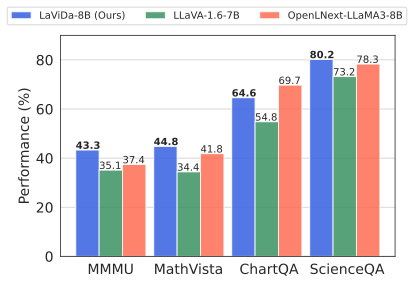
| 原文表 1（节选） | LaViDa-L | LaViDa-D | LLaVA-1.6-7B | Open-LLaVA-Next-8B | LLaVA-OV-7B |
|---|---|---|---|---|---|
| 参数量 | 8B | 7B | 7B | 8B | 7B |
| 图像数：预训练 / 微调 | 0.6M / 1.0M | 0.6M / 1.0M | 0.6M / 0.7M | 0.6M / 1.0M | 0.6M / 7.2M |
| 通用 | |||||
| MME-P（感知） | 1365.6 | 1463.5 | 1519.3 | 1610.9 | 1580.0 |
| VQAv2 | 72.2 | 75.2 | 80.1 | 71.9 | – |
| MMBench | 70.5 | 73.8 | 54.6 | 74.4 | 80.8 |
| MMMU | 43.3 | 42.6 | 35.1 | 37.4 | 48.8 |
| 推理 | |||||
| MME-C（认知） | 341.1 | 378.9 | 322.5 | 336.8 | 418.0 |
| MathVista | 44.8 | 42.1 | 34.4 | 41.8 | 63.2 |
| MathVerse | 27.2 | 24.1 | 14.3 | 14.6 | – |
| MathVision | 20.4 | 19.4 | 12.8 | 14.1 | – |
| 科学 | |||||
| ScienceQA | 80.2 | 81.4 | 73.2 | 78.3 | 96.0 |
| AI2D | 70.0 | 69.0 | 66.6 | 70.2 | 81.4 |
| 文字识别（OCR） | |||||
| TextVQA | 56.3 | 57.1 | 64.9 | 61.7 | – |
| DocVQA | 59.0 | 56.1 | 74.4 | 69.9 | 87.5 |
| ChartQA | 64.6 | 61.0 | 54.8 | 69.7 | 80.0 |
| InfoVQA | 34.2 | 36.2 | 37.1 | 36.7 | 68.8 |
“–”表示原文没有报告。原文表 1 还有 Qwen2.5-VL-7B 和 InternVL3-8B 两列，它们的 MMMU 分别是 58.6 和 65.6，微调图像数分别约 2M 和 21.7M，这里不再列出。
怎么读这张表。LaViDa 最亮眼的是知识和数学推理类：MMMU 43.3，比 Open-LLaVA-Next 高 5.9 分；MathVerse 和 MathVision 几乎是两个自回归基线的两倍（27.2 对 14.6，20.4 对 14.1）。科学类大致持平：ScienceQA 略高，AI2D 70.0 对 70.2。OCR 类全面落后：DocVQA 59.0 对 69.9，TextVQA 56.3 对 61.7，ChartQA 64.6 对 69.7。逐项数一下，LaViDa-L 对 Open-LLaVA-Next 的 14 个基准是 7 胜 7 负，LaViDa-D 也是 7 胜 7 负（推算）。和训练数据多得多的前沿模型（例如 LLaVA-OneVision 微调用了 7.2M 张图）相比，LaViDa 在它们报告了的每一项上都差得很远。
作者把 OCR 上的差距归因于平均池化：每张图的视觉 token 从 3645 压到 980，细粒度的空间信息丢了，对需要精确识别文字和版面的任务伤害最大。作者说这是计算预算有限下的取舍。这个解释有两组实验支持：第 4.6 节的分辨率消融显示，从单视图 384² 换成 5 视图 768² 后，OCR 类提升远大于 VQAv2；附录 B.6 把训练量翻倍后，ChartQA、DocVQA、InfoVQA 都大幅上升。
那么，LaViDa 和 Open-LLaVA-Next 到底在哪些条件上是对齐的？把论文、两边的官方仓库合在一起，可以列成下表：
| 条件 | LaViDa-L | Open-LLaVA-Next-8B | 对齐了吗 |
|---|---|---|---|
| 图文数据量 | 0.6M 预训练 + 约 1.0M 微调 | 0.6M + 1.0M | 对齐（数据主要同源，LaViDa 调整了权重） |
| 语言骨干 | LLaDA-8B-Instruct：掩码扩散，从零训练 2.3T token | LLaMA3-8B-Instruct：自回归，预训练 15T token | 不对齐，语言骨干的预训练量差约 6.5 倍（推算） |
| 视觉编码器 | SigLIP-400M，输入 384² | CLIP ViT-L/14，输入 336² | 不对齐；LaViDa 自己的消融里 SigLIP 平均比 CLIP 高 1.86（表 11） |
| 每张图的视觉 token | 980（池化后） | 2880（不池化） | 不对齐，对 LaViDa 的 OCR 不利 |
| 微调轮数 | 2 轮，每个样本两份互补副本 | 1 轮（官方训练脚本） | 不对齐，LaViDa 对微调数据过得更多 |
| 评测 | lmms-eval 默认提示，\(K=L\) | 表 1 未说明是引用还是重测 | 不确定（见第 4.7 节） |
表中 LLaDA 的 2.3T 与 LLaMA3 的 15T 来自 LLaDA 论文；Open-LLaVA-Next 的视觉编码器、语言骨干和训练轮数来自它的官方仓库（README 与 scripts/v1_6/train/8b/finetune.sh）。可以看出，“数据规模相近”只对齐了图文数据这一项。语言骨干一侧，自回归基线的语言模型见过多得多的文本，这对 LaViDa 不利；视觉编码器和训练轮数这两项则对 LaViDa 有利；视觉 token 数对 LaViDa 不利。几项因素方向相反，所以“7 胜 7 负”这个结果既不能说明扩散骨干更强，也不能说明更弱，只能说明在这种配置下两者处在同一档次。
4.3 推理蒸馏：LaViDa-Reason
前人用长思维链（CoT）数据蒸馏语言模型和视觉语言模型，激发出了较强的推理能力。作者用同样的思路研究 LaViDa 的推理能力：选一个较强的 7B 推理模型 VL-Rethinker-7B 做老师，用它自己的 ViRL-39K 数据（图片、问题、最终答案）让老师生成长推理链，只保留最终答案正确的那些，得到 1.92 万条数据。在第二阶段模型上用这些数据再训练 5 轮（其他设置与第二阶段相同），得到 LaViDa-Reason。推理时把画布长度设为 \(L=1024\)，因为它要写很长的推理过程。
| 原文表 2a | MathVista | MathVerse | MathVision |
|---|---|---|---|
| LaViDa（第二阶段，不写推理链） | 44.8 | 27.2 | 20.4 |
| LaViDa-Reason（写推理链） | 45.2 | 29.3 | 24.0 |
| 相对提升 | +1% | +8% | +18% |
三个数学基准都有提升，最难的 MathVision 提升最多（相对 +18%）。附录 B.3 还在 MathVision 上比较了不同调度（原文表 7）：NFE = 25%（256 步）时，\(\alpha=1/3\) 得 12.5，线性 10.86，余弦 8.55，\(\alpha=3\) 只有 5.59；NFE = 50%（512 步）时分别是 21.05、16.12、13.49、8.88；NFE = 100%（1024 步）时都是 24.02。也就是说，在长推理链上，凸调度同样最好，而且 50% NFE 下 \(\alpha=1/3\) 比线性高约 30%（21.05 对 16.12）。
- 检查点是在测试集上挑的。附录 B.3 写明，作者训练 5 轮后，挑的是在 MathVision testmini 上表现最好的检查点，而表 2a 报告的正是 MathVision testmini（评测划分
mathvision_testmini）。用测试集挑模型会让这个分数偏乐观，“+18%”是三个提升里最不可靠的一个（本站推论）。 - 对照组不是自回归模型。表 2a 比的是同一个模型“写推理链前后”，没有一个用同样 1.92 万条数据蒸馏的自回归 VLM 作对照，所以它说明的是“LaViDa 能从推理链蒸馏中获益”，不是“扩散模型比自回归模型更会推理”。
- 附录 B.3 的脚注说这份数据会在正式版发布；截至 2026-10-20，Hugging Face 上已有
hbXNov/lavida-reason-data数据集和 LaViDa-Reason 权重。
4.4 文本填空：LaViDa-FIM 与受约束的看图写诗
自回归模型只能根据左边的内容写右边。要它“在中间填一段，使得前后都通顺”，常见的办法是 FIM（fill-in-the-middle）训练：把一段文本切成前缀、中间、后缀三段，重新排成“前缀 + 后缀 + 中间”的顺序训练，模型就学会了在看过前后文之后再写中间（代码补全常用这种办法）。但这仍然是“先看完再从左往右写”，而且只能处理一个空。如果约束散落在各处（比如四行诗每行开头各有一个指定的音节），自回归模型只能把要求写进提示词里，能否做到全凭模型自觉。
掩码扩散模型则天然支持填空：画布上的任何位置都可以事先写好固定的 token，其余位置留 [M]，模型在去噪时同时看见左右两边。已经写好的 token 在整个过程中不会被改动，所以这类“某个位置必须是某个词”的约束是由构造保证的。
基本做法。给一份长度为 \(L\) 的草稿，其中有 \(L_M\) 个 [M]。由于前向过程中时间 \(t\) 时平均有 \(tL\) 个位置被遮住，作者直接从 \(t=L_M/L\) 开始，按标准推理一直走到 \(t=0\)，就把这 \(L_M\) 个空填满了。
长度不定的问题。上面的做法要求事先知道每个空正好填几个 token。可实际上，“There is a [M][M][M][M] in the image”里的空，可能该填“dog”（1 个 token），也可能该填“traffic light”（2 个）。为此作者在第二阶段模型上又训练了一段，用第二阶段数据的 20%，得到 LaViDa-FIM。训练时在文本中间随机插入长度不定的 [S]…[S][FIM] 片段；推理时在每个空的末尾加上 [FIM]（例如 [M][M][M][M][FIM]），表示这个空可以提前结束。模型就会生成 [dog][S][S][S][FIM] 或 [traffic][light][S][S][FIM] 这样的结果，多出来的位置用 [S] 占位。
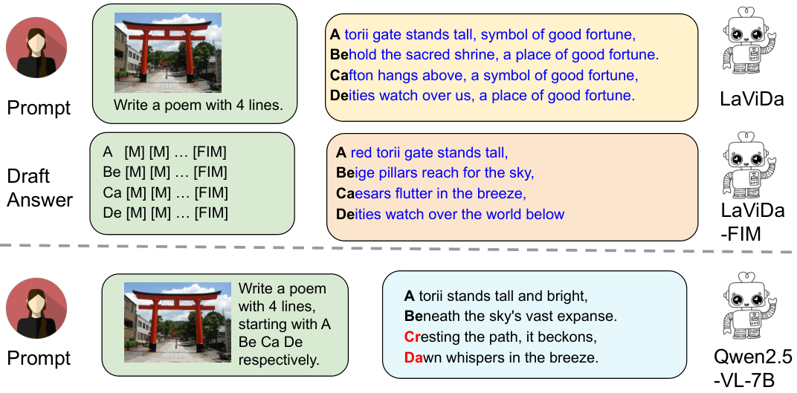
| 原文表 2b：受约束看图写诗（100 个样本） | 句子级满足率 | 样本级满足率 |
|---|---|---|
| LaViDa | 1.00 | 1.00 |
| LaViDa-FIM | 1.00 | 1.00 |
| LLaVA-1.6-7B（自回归） | 0.41 | 0.37 |
| Qwen2.5-VL-7B（自回归） | 0.45 | 0.16 |
句子级满足率是“满足行首约束的行”所占比例，样本级满足率是“四行全部满足的诗”所占比例。两个 LaViDa 变体都是 100%，两个自回归模型都不到 50%。摘要和引言里说的“+59%”，就是句子级上 LaViDa 与 LLaVA-1.6-7B 之差（1.00 − 0.41，推算）；若按样本级与 Qwen2.5-VL-7B 比，差距是 84 个百分点（推算）。
附录 B.2 给了另外三个填空用法（原文图 6）：按给定的 JSON 模板提取图中物体的类别、位置、颜色和方位；删掉一句话、换成 [M]，让模型根据图片重写这一句；补全电影剧本中缺失的一句台词。作者承认，自回归模型通过精心设计的提示也许能做到类似的效果，但用扩散模型直接填空要简单得多。
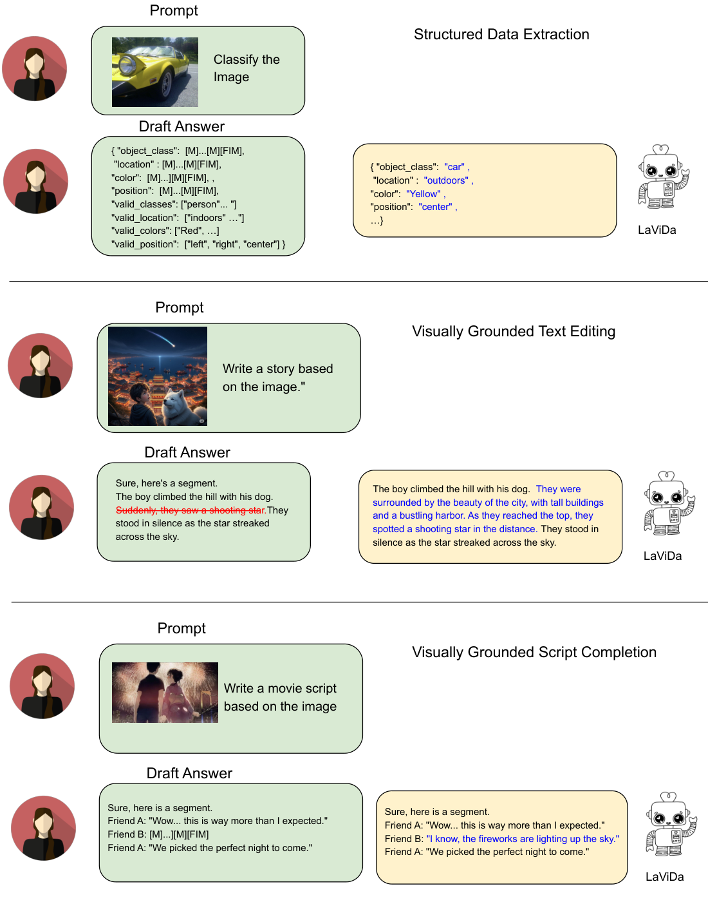
- 扩散模型的行首音节是直接写在画布上的固定 token，满足约束几乎是由构造保证的；自回归基线只拿到了写在提示词里的要求，没有使用任何约束解码。实际上，行首约束对自回归模型也可以硬性施加：每当模型输出换行符，就强制接上下一行指定的音节。论文没有比较这种做法，所以 100% 对不到 50% 衡量的是“能否硬性施加约束”，而不是两类模型在同等手段下谁更擅长受约束写作（本站推论）。
- 表 2b 只统计约束是否满足，不评价诗写得好不好；从图 4a 的 “Cafton” 和反复出现的 “a place of good fortune” 看，满足约束和写得通顺是两回事。
- 写诗任务是作者自己构造的 100 个样本，没有公开的评测集可供复核。
4.5 速度与质量：步数怎么换速度
LaViDa 可以通过离散化步数 \(K\) 方便地在速度和质量之间取舍。作者在 COCO 2017 验证集的 500 张图上做图像描述，最大生成长度 \(L=32\)，试了 \(K\in\{32,24,16,8\}\)，也就是 NFE = 100%、75%、50%、25%，在单张 A5000 上测每张图的平均延迟，用 CIDEr 衡量描述质量（CIDEr 衡量生成描述与人工参考描述在词组层面的相似度，越高越好）。
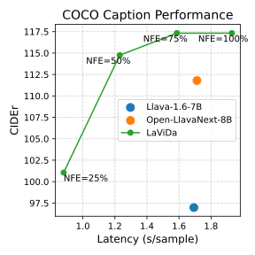
作者的总结是：NFE = 100% 时 LaViDa 的 CIDEr 高于自回归基线，但稍慢；75% 和 50% 时既更快又更好；25% 时快得多，但质量落后。
缓存的作用（原文表 3a）。LaViDa 的速度依赖前缀缓存。表 3a 比较了 Prefix-DLM 与 LLaDA 那种不带缓存的全注意力：
| 原文表 3a：COCO 描述（500 张，L = 32，单卡 A5000） | NFE | CIDEr | 延迟（秒/张） |
|---|---|---|---|
| 全注意力（无缓存） | 100% | 121.0 | 7.65 |
| Prefix-DLM | 100% | 117.3 | 1.93 |
| 全注意力（无缓存） | 50% | 118.6 | 4.13 |
| Prefix-DLM | 50% | 114.8 | 1.23 |
| Open-LLaVA-Next-8B（自回归） | – | 111.8 | 1.71 |
缓存在 100% NFE 下把延迟从 7.65 秒降到 1.93 秒，即论文说的“最多 3.9 倍”（7.65 ÷ 1.93 ≈ 3.96，推算），CIDEr 降 3.7；在 50% NFE 下是 3.4 倍（推算），CIDEr 降 3.8。这些实验用的是第二阶段模型，训练时一直是全注意力，所以掉分来自 §3.3 讲的训练与推理不一致。值得注意的是，LaViDa 质量最高的配置（全注意力、100% NFE，121.0）比自回归基线慢 4.5 倍（7.65 ÷ 1.71，推算）。
调度的作用（原文表 3b）。作者在同样的 COCO 设置下，比较了 \(\alpha=1/3\)、\(\alpha=3\)、线性和余弦四种调度：
凸调度 \(\alpha=1/3\) 在每个 NFE 下都最好，而且优势随步数减少而扩大：50% NFE 时它的 114.8 已经超过自回归基线，75% 时与 100% 持平；25% NFE 时它仍有 101.1，而线性只有 84.9、凹调度只有 48.7。前面 4.3 节提到，在 LaViDa-Reason 的长推理链上也得到了同样的排序。
另一张速度图（附录 B.3，原文图 7）。作者还在 MathVista 上画了“吞吐量—准确率”的前沿曲线，结论是 LaViDa 的前沿在速度和质量上都严格优于 Open-LLaVA-Next-8B。
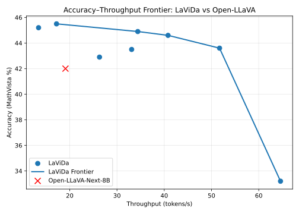
4.6 消融：互补掩码、分辨率、视觉编码器和训练量
消融实验都用第二阶段数据的一个 20 万条子集训练，比较单一改动的效果。
| 原文表 4a：互补掩码 | 不用 | 用 |
|---|---|---|
| MME | 260.00 | 297.00 |
| MathVista | 28.40 | 33.40 |
| ScienceQA | 48.74 | 81.49 |
| MMMU | 38.56 | 41.78 |
| 训练 1000 步耗时（批大小 128） | 8.2 小时 | 8.9 小时 |
互补掩码让四个基准全部提升，ScienceQA 从 48.74 到 81.49，相对提升 67%；训练时间只多约 8%。这里的 MME 分数量级（260、297）与表 1 的 MME-C（认知，341.1）相近，应是认知分，而不是上千分的感知分 MME-P（本站推论，论文没有注明）。
| 原文表 4b：输入分辨率 | 384²（单视图，不池化） | 768²（5 视图，池化） |
|---|---|---|
| TextVQA | 48.40 | 55.65 |
| DocVQA | 43.22 | 58.72 |
| ChartQA | 42.20 | 57.70 |
| InfoVQA | 26.48 | 36.23 |
| VQAv2 | 65.92 | 66.78 |
高分辨率输入整体更好，而且对 OCR 类任务的提升（DocVQA +15.5、ChartQA +15.5，推算）远大于通用的 VQAv2（+0.9）。作者特别说明，低分辨率组没有做平均池化，所以这组比较是“1 个视图 729 个 token”对“5 个视图池化后 980 个 token”，两者的 token 数相差不大，差别主要在看到了多少细节。
视觉编码器（附录 B.5，原文表 11）。训练 1500 步（约 20 万个样本）后比较 SigLIP、CLIP 和 MetaCLIP：SigLIP 在 7 个基准上的平均分比 CLIP 高 1.86、比 MetaCLIP 高 2.77，优势主要在 VQAv2（63.26 对 59.58 和 55.96）、ScienceQA（80.36 对 76.56 和 78.66）和 AI2D（64.31 对 59.78 和 62.79）。这个结果也提醒我们：表 1 里两个自回归基线用的都是 CLIP，视觉编码器这一项本身就让 LaViDa 占了一点便宜。
训练量翻倍（附录 B.6，原文表 12）。作者把训练计划延长一倍，以检验 LaViDa 能否随训练量继续提升：
| 原文表 12 | MME（认知） | MMBench | ChartQA | DocVQA | InfoVQA |
|---|---|---|---|---|---|
| LaViDa | 341.1 | 70.5 | 64.6 | 59.0 | 34.2 |
| + 训练量翻倍 | 444.3 | 75.6 | 74.9 | 68.6 | 43.4 |
| Open-LLaVA-Next-8B | 336.8 | 74.4 | 69.7 | 69.9 | 36.7 |
训练量翻倍后，除 DocVQA（68.6 对 69.9）外都超过了 Open-LLaVA-Next。表 12 的列名只写了 MME，但 341.1、336.8 与表 1 的 MME-C 一致，所以这一列是认知分。要注意，论文没有说明“翻倍”是怎么做的；如果是在同一份微调数据上多训练，LaViDa 就对这份数据过了 4 轮，而 Open-LLaVA-Next 只过了 1 轮（推算）。这组结果说明扩散 VLM 还没到饱和，但不能说明在同等训练量下它比自回归模型强。
4.7 结果的份量
把这一节的数字放在一起，可以这样估量：
- 和自回归模型比，对齐了什么。对齐得最好的是图文数据：LaViDa 和 Open-LLaVA-Next 都是约 0.6M 预训练加 1.0M 微调，而且来源大体相同。但语言骨干的预训练量（LLaDA 2.3T token 对 LLaMA3 15T）、视觉编码器（SigLIP 对 CLIP）、每张图的视觉 token（980 对 2880）和微调轮数（2 轮加互补双份，对 1 轮）都不同，方向有利有弊（见 4.2 节的对照表）。所以“7 胜 7 负”更适合理解为“同一档次”，而不是谁优谁劣。
- 对照组的分数从哪来。论文没有说明表 1 中自回归模型的分数是引用的还是自己重测的。和 Open-LLaVA-NeXT 仓库自报的成绩对照，有的相同（MMBench 74.4），有的差别很大（TextVQA 仓库为 69.8、表 1 为 61.7；ScienceQA 仓库为 77.3、表 1 为 78.3；LLaVA-1.6-7B 的 MMBench 仓库表中为 67.4、表 1 为 54.6）。差别可能来自评测口径（例如 TextVQA 是否在提示中提供 OCR 结果、ScienceQA 用全集还是图像子集），说明至少有一部分是用 lmms-eval 默认设置重测的（本站推论）。重测本身是公平的做法，但读者需要知道这些数字不能直接与各模型论文里的数字比较。
- 步数与速度。表 1 的所有分数都是在最慢的设置下测的：\(K=L\)，每次前向只定一个 token。对于画布长 16、答案只有一两个 token 的选择题，LaViDa 要做 16 次前向，自回归模型生成答案加结束符只需两三次，所以在这类任务上 LaViDa 并不更快（推算）。速度只在 COCO 描述（\(L=32\)）和 MathVista 上测过，且都是单张 A5000、一次一个样本。论文没有说明自回归基线用什么推理框架测速，README 的同类表格只注明 LLaVA-1.6 基线开了 KV 缓存，没有迹象表明用了 vLLM、SGLang 这样的推理引擎。另外，自回归模型遇到结束符就停，而 LaViDa 总要走完整块画布，两边“生成了多少个 token”并不相同。批大小为 1 时，自回归解码受显存带宽限制，扩散模型每步多定几个 token 很划算；批大小变大后，自回归模型每个 token 的成本会被摊薄，而扩散模型每步都要处理整块画布，优势可能缩小（本站推论）。
- 哪些任务天然偏向扩散模型。受约束写诗和 JSON 提取正是“需要非从左到右生成”的任务，扩散模型在这里的优势是结构性的；但写诗的 100% 是靠把字固定在画布上得到的，自回归基线没有使用约束解码，任务也是作者自建的 100 个样本。其余 14 个基准都是标准的看图问答。
- 后训练。LaViDa-Reason 的对照是自己“写推理链之前”，没有同等蒸馏的自回归对照；最好的检查点是在 MathVision testmini 上挑的，而这正是报告分数的划分。
- 消融的统计强度。所有消融都在 20 万条子集、1000–1500 步上做，每组只有一次运行，没有报告方差；不少差距（例如表 10、表 11 里的零点几分）在这种设置下难以区分噪声。
总的来说，这篇论文最站得住的结论是：一个掩码扩散语言模型可以按 LLaVA 的配方变成视觉语言模型，在相同图文数据规模下达到与自回归 VLM 同一档次的理解能力；三项技术各自有清楚、可测的效果（互补掩码提升训练效率，前缀缓存带来约 4 倍加速但掉 3.7 个 CIDEr，凸调度在少步数时明显更好）；在需要硬性格式约束的场景里，扩散模型有自回归模型难以直接提供的能力。至于“比自回归 VLM 更快、更好”，只在特定任务、特定硬件和批大小下成立。
5 局限、同期工作与结论
结论（§5）。作者的总结是：LaViDa 是基于扩散模型的视觉语言模型家族；互补掩码、Prefix-DLM 缓存和时间步偏移三项技术，明显优于把扩散模型直接套到视觉任务上的朴素做法；在全面的评测里，LaViDa 与相近条件下训练的自回归模型表现相当，同时具备速度—质量可调和通过填空实现可控生成这两项独特优势；这把扩散模型在语言领域的成功扩展到了视觉领域。
局限（附录 D）。作者列了两条。第一是规模：LaViDa 只是在和数据规模相近的自回归模型比较时有竞争力，和 LLaVA-OneVision、Qwen2.5-VL 这些用了更多数据或更大模型的前沿开源 VLM 相比仍有明显差距，扩散模型能否随模型和数据规模继续提升，需要以后研究。第二是 OCR：落后的主要原因是为缩短序列而做的平均池化。两个自回归基线不做池化，每张图用 2880 个视觉 token；LaViDa 不池化则要 3645 个。池化之所以必要，是因为 LLaDA 和 Dream 的上下文长度只有 4096 和 2048（见 §3.1 的示意图）。
作者也试过用 RoPE 缩放之类的技术把上下文拉长，但效果有限。他们把 Dream 扩展到 4096 后，用“大海捞针”任务（在 4096 长度的上下文里找出一条事先插入的信息）测试：Dream-7B 的准确率是 72.4，LLaDA-8B 是 91.6，Llama-3-8B 是 95.4。作者希望未来有上下文更长的扩散基座模型，可以直接用来做视觉语言任务。
其他附录。附录 E 指出，模型可能继承 LLaDA、Dream 和训练数据中的偏见，也可能有和基座模型一样的幻觉问题，作者建议只用于研究。附录 F 列出了所有数据和模型的许可证，其中第二阶段使用的 Open-LLaVA-NeXT-mix1M 数据是 CC BY-NC 4.0（仅限非商业研究）。附录 G 说明，大语言模型只用于生成第 4.3 节的数学推理训练数据。
同期工作 MMaDA（附录 H）。作者说 MMaDA 发布于他们投稿截止之后，它用扩散的形式统一了理解和生成，但没有用到 LaViDa 的这些技术，因此性能较差、推理较慢。原文表 14 的比较如下：
| 原文表 14 | MME | MMMU | MMBench | 图像描述延迟（秒/张） |
|---|---|---|---|---|
| LaViDa-D（Dream） | 1463.5 | 42.6 | 73.8 | 1.13 |
| LaViDa-L（LLaDA） | 1365.6 | 43.3 | 70.5 | 1.32 |
| MMaDA | 1410.7 | 30.2 | 68.5 | 7.68 |
- MMaDA 是一个同时会画图的统一模型，图像以离散的 VQ 码输入；LaViDa 只做理解、用连续的 SigLIP 特征。两者的设计目标不同，理解分数上的差距本在意料之中（两种路线的取舍见 旧版页 Q37）。
- 表 14 没有写明延迟是在什么设置下测的。官方 README 里有一张同样的表，注明“生成长度 32、步数 16”，但其中 MMaDA 的延迟是 3.93 秒，而不是论文的 7.68 秒。README 里 COCO 描述的表也和论文表 3a 不同（例如缓存开启、100% NFE 时 README 为 107.8 CIDEr、2.01 秒，论文为 117.3、1.93 秒），README 没有解释差别，可能对应不同的检查点或评测设置。
后来怎么样了
LaViDa 是 2025 年 5 月下旬几乎同时出现的几篇多模态扩散语言模型之一。截至 2026-10-19，它在 Semantic Scholar 上被引用 93 次。它的三项技术后来各有延续，作者组也沿着它做了一个系列：
- 同一团队的后续。Lavida-O（2025-09，ICLR 2026）把 LaViDa 扩展成理解与生成统一的模型，用 Elastic-MoT 结构把一个轻量的生成分支和较大的理解分支耦合起来，支持目标定位、图像编辑和 1024 像素的文生图。Sparse-LaViDa（2025-12，CVPR 2026）在每一步推理时动态截掉不必要的掩码 token，用专门的寄存器 token 代替它们，并设计了与之匹配的训练注意力掩码，让训练和推理一致，在多个任务上最多加速约 2 倍。LaViDa-R1（2026-02，ICML 2026）做统一的 SFT 加多任务强化学习，摘要中的技术之一是“互补似然估计”，可以看作互补掩码思路在强化学习里的延续。
- 同期的对照工作。LLaDA-V 同样按 LLaVA 配方给 LLaDA 接上视觉编码器，但它的自回归对照 LLaMA3-V 使用了完全相同的视觉编码器、投影层、数据和训练流程，只换语言骨干，是比 LaViDa 的表 1 控制得更严格的比较。MMaDA 走的是离散图像码、理解与生成统一的路线。Dream-VL 与 Dream-VLA（2025-12）则以 Dream 为骨干，把扩散 VLM 推到了视觉—语言—动作模型。
- 缓存的路线。Prefix-DLM 只能缓存不变的前缀。之后的工作开始缓存回答本身：dKV-Cache 和 Fast-dLLM 对已揭开的回答 token 做近似缓存，D2F 则在训练中引入块因果结构，让标准 KV 缓存直接可用。它们与 Block Diffusion 一起，构成了附录 B.4 那张表格里“缓存与双向上下文怎么兼得”的后续答案。
- 产业方向。本文作者之一 Aditya Grover 是扩散语言模型公司 Inception 的联合创始人兼 CTO，该公司推出了商用扩散语言模型 Mercury。
想看多模态扩散模型的整体结构对比和配套简答题（包括“前缀缓存为什么能精确复用却仍然掉分”），见旧版结构拆解页的 LaViDa 一节和其中的 Q38。
作者
单位按论文署名。背景只列可公开查证的信息：作者主页、实验室与机构页面，以及论文本身的参考文献。
影响力
- 引用：见页首（Semantic Scholar 快照，2026-10-19）。
- 发表：NeurIPS 2025，Spotlight（OpenReview 页面的 venue 字段为 “NeurIPS 2025 spotlight”）。arXiv v1 发布于 2025-05-22，最新的 v4 于 2026-07-15 更新；本站比对了 v1 与 v4 的正文，主要数字没有变化，v4 的页脚由“Preprint. Under review.”改为 NeurIPS 2025，并补了致谢。
- 开源：jacklishufan/LaViDa 有 232 个 star、13 个 fork（截至 2026-10-20），Apache-2.0 许可，仓库创建于 2025-05-22；包含训练脚本、lmms-eval 评测封装、填空推理脚本和一个不依赖源码的 Transformers 兼容检查点。Hugging Face 合集 LaViDa-1.0 公开了 LLaDA 与 Dream 两个骨干的指令模型、FIM 版、Reason 版、低分辨率版、两个第一阶段检查点，以及训练数据和推理链数据。
- 后续工作：同一团队以 LaViDa 为起点发展出 Lavida-O、Sparse-LaViDa 和 LaViDa-R1（见“后来怎么样了”）。
延伸阅读
- 旧版结构拆解：多模态扩散 LLM 中的 LaViDa 一节，以及同页的 Q38：前缀缓存为何精确复用却仍掉分
- LLaDA-V 精读页：同期、同配方、对照更严格的扩散 VLM
- MMaDA 精读页：离散图像码、理解与生成统一的同期工作
- LLaDA 精读页 与 Dream 精读页：LaViDa 的两个语言骨干
- MDLM 精读页：掩码扩散的训练目标与 \(1/t\) 权重从哪来
- Block Diffusion 精读页、Fast-dLLM 精读页、dKV-Cache 精读页、D2F 精读页：扩散模型怎样用上 KV 缓存的其他路线
- vLLM 精读页：KV 缓存是什么、为什么批处理能提高吞吐
- Mercury 精读页：Grover 联合创办的 Inception 的商用扩散模型
- 返回论文书架
原文：Shufan Li, Konstantinos Kallidromitis, Hritik Bansal, Akash Gokul, Yusuke Kato, Kazuki Kozuka, Jason Kuen, Zhe Lin, Kai-Wei Chang, Aditya Grover. LaViDa: A Large Diffusion Language Model for Multimodal Understanding. arXiv:2505.16839（v1 2025-05-22，v4 2026-07-15），NeurIPS 2025。论文以 CC BY 4.0 许可发布；本页的原文图 1–9 取自 arXiv HTML 版（v4）的图片文件，未做修改，版权归原作者。本页是对论文的中文精读笔记，正文与示意图、数据图由本站撰写和绘制，并非翻译；数字与结论以原文为准，标“推算”的为本站计算，标“读图估计”的为本站从原图读出的近似值，标“本站推论”的为本站判断。官方代码引自 jacklishufan/LaViDa（Apache-2.0）。